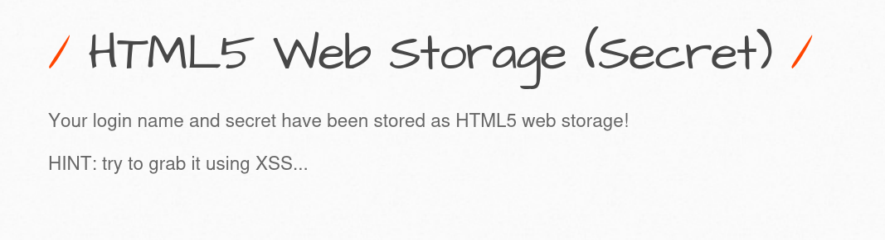
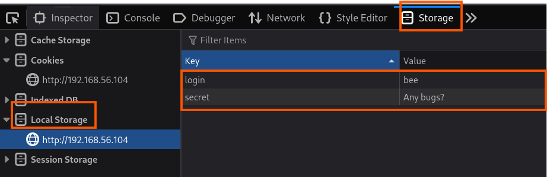
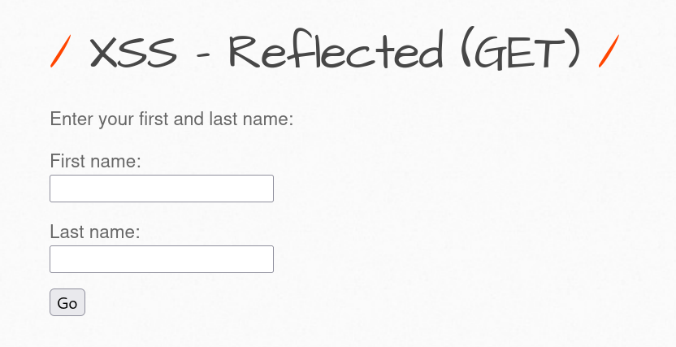
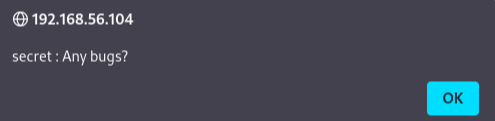

웹 스토리지
HTML5 이전에는 쿠키를 이용하여 데이터를 저장해야 했다. 하지만 쿠키에 데이터를 저장하면 두 가지 제약 사항이 생긴다.
1. 쿠키는 요청 메시지가 전달될 때 자동으로 전송되기 때문에 요청이 일어날 때마다 데이터가 전송되어 성능 저하가 발생됨
2. 각 쿠키의 최대 길이는 웹 브라우저에 따라 다르지만, 모든 웹 브라우저를 지원하기 위해서는 최대 4093바이트의 크기로 제한해야 함.
그러나 HTML5에서 새롭게 지원된 웹 스토리지 기능 덕에, 그보다 더 많은 데이터를 저장할 수 있으며, 꼭 필요한 데이터가 아니라면 매번 서버로 전달하지 않아도 됨.
웹 스토리지를 사용할 때는 보안에 주의를 기울여야 함 왜냐하면 스토리지에 저장된 데이터는 자바스크립트를 사용하여 읽을 수 있기 때문이다. 따라서 웹 사이트 어딘가에 XSS 취약점이 존재한다면 공격자가 마음대로 자바스크립트를 실행할 수 있기에 공격자가 스토리지에 저장된 데이터를 읽을 수 있게 됨.
웹 스토리지는 두 종류로 분리됨
1. 세션 스토리지
- 세션이 종료되면 데이터도 같이 종료됨
2. 로컬 스토리지
- 세션이 종료돼도 삭제 요청이 있기 전까진 데이터가 계속 남아있음 때문에 로컬 스토리지를 더 신경 써야 함
실습

당신의 로그인 이름과 시크릿이 HTML5 웹에 저장되어 있다는 문구가 있다.
힌트로는 XSS를 사용하라고 한다.
웹 스토리지 정보는 개발자도구(F12) 기능으로 확인이 가능하다
개발자도구 → Storage → Local Storage

스토리지 안에 정보가 login은 bee secret는 Any bugs? 문구가 떠있다.
위에 말했듯이 로컬스토리지에 저장된 정보는 웹사이트 어딘가에 XSS 취약점이 존재한다는 경우 접근이 가능하다.
Tip
- XSS 취약점이 있다면 웹 스토리지에 저장된 정보를 알아낼 수 있다.
XSS으로 스토리지를 읽기 위해 웹페이지에 있는 XSS 실습공간에서 해보았다.

저기 위에 있는 First name 입력칸에 다음과 같은 코드를 입력해 보았다.
<script>alert('secret: ' + localStorge.getItem('secret'))</script>

아까 전 로컬스토리지에서 보았던 문구가 출력이 되었다.
즉, XSS로 스토리지 값을 볼 수 있다는 것을 확인할 수 있었다.